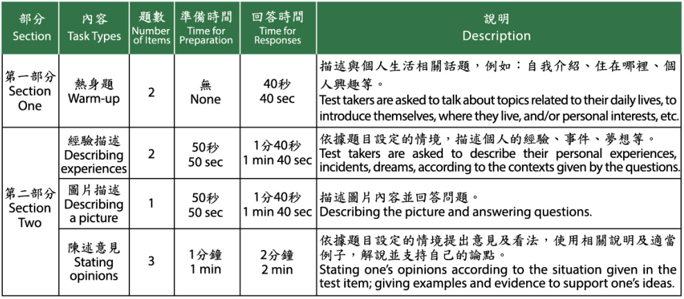
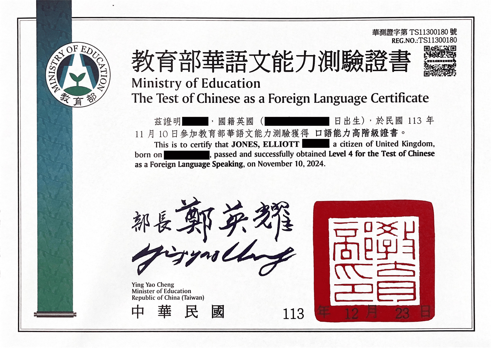
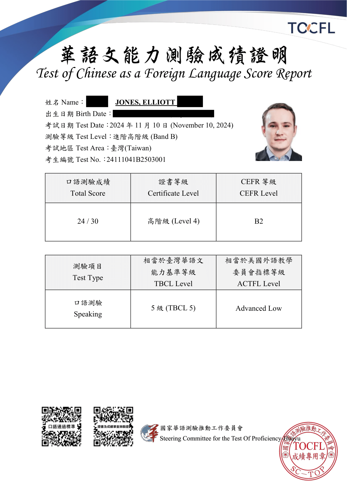

Elliott Jones
雙語技術寫作者


在台灣與大陸近十年，中文水平等於 TOCFL 高階級。曾於上海為英國政府工作，並服務多家台灣頂尖科技公司。
我通過了 TOCFL 口語高階級
發布於2024/12/22，由 Elliott Jones 撰寫

11月11日，我參加了 TOCFL（華語文能力測驗）口語考試。
TOCFL 是台灣為非母語者設計的華語能力測試。
與 聽力與閱讀 CAT 考試不同，口語考試分為三個不同的級別：
- A 級（對應 CEFR A1 和 A2，等同於一級和二級）
- B 級（對應 CEFR B1 和 B2，等同於三級和四級）
- C 級（對應 CEFR C1 和 C2，等同於五級和六級）
我的考試是 B 級，因此如果表現良好，最高可以被評為四級。
為什麼我的口語能力接近五級/CEFR C1，但沒有選擇參加 C 級口語考試呢？
因為 C 級口語考試要求考生自行閱讀題目並口頭回答，這意味著需要具備 C 級的閱讀能力，而我目前還未達到。
B 級考試的題目是由系統朗讀的，因此只要聽力能力達到 B 級標準，就可以按照口語能力來回答問題。
我正在積極提升我的閱讀能力，期望有一天能參加 C 級口語考試，但目前還未準備好。
目標
在參加考試之前，我的目標是通過四級（CEFR B2）。
以下是我製作的一張大致比較 TOCFL、HSK 3.0 和 HSK 2.0 的圖表。

準備過程
與之前為聽力與閱讀考試所做的準備不同，這次我並未特意為口語考試準備。我認為自己應該能輕鬆通過四級，因為我的實際能力高於四級。但事實上，我應該練習回答一些模擬題目，以熟悉考試的格式和時間安排，這可能會讓我多拿幾分。
在實際考試中，我幾次回答問題時超時，這可能影響了得分。如果事先熟悉題型和時間安排，就能避免這種情況。
考試內容
以下是從 TOCFL 官方網站摘錄的考試格式：
{kind=link}

在考試中，我犯了一些錯誤。我的回答可能過於隨意，使用了不少俚語，甚至在回答中錯誤地用了一些閩南話詞彙。有一次我還說了英語詞彙「我不care」，因為在台灣的日常對話中，這比「我不在乎」更常用。不過，這些錯誤我都有及時糾正，所以對我的總分影響應該不大。最重要的是，我能清楚、連貫地回答所有問題。
我的成績
我等了一個多月，終於在12月20 日得知自己通過了考試。
我的得分是 30 分中的 24 分，足以被評為四級。不過，我無法找到口語考試的具體評分標準，所以不確定通過四級需要多少分。
{kind=link}

{kind=link}

喜歡這個文章嗎？
讀我上一個文章
我通過了 TOCFL 聽力高階級
2024年5月18日
5月18日，我再次參加了 TOCFL（華語文能力測驗）聽力與閱讀考試。 TOCFL 是臺灣為非母語人士設計的華語能力測驗。